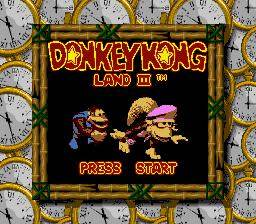
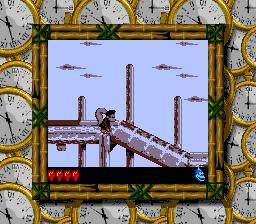

Switch Online
Official option
Some Game Boy Color games have been part of Nintendo Switch Online. Confirm this title is still in the current library. Where to Play does not host this game.
Nintendo Switch Online overview Official site
Image from this RAWG record. Powered by RAWG.
Rare's Donkey Kong Land 3 is the 1997 handheld companion to Donkey Kong Country 3, starring Dixie and Kiddy. Color hardware shows off what the Game Boy version started.
Same series is the tight name match. Same franchise is the wider family. Same platform is other games on the systems named above.
The series list above is the whole family set in this catalog.
Facts in this grid are RAWG's, not our review. Open the RAWG record. RAWG.


Screenshots from this RAWG record. Powered by RAWG.
Some Game Boy Color games have been part of Nintendo Switch Online. Confirm this title is still in the current library. Where to Play does not host this game.
Nintendo Switch Online overview Official siteWe don't host this game. Confirm the title is still offered before you rely on a library note.